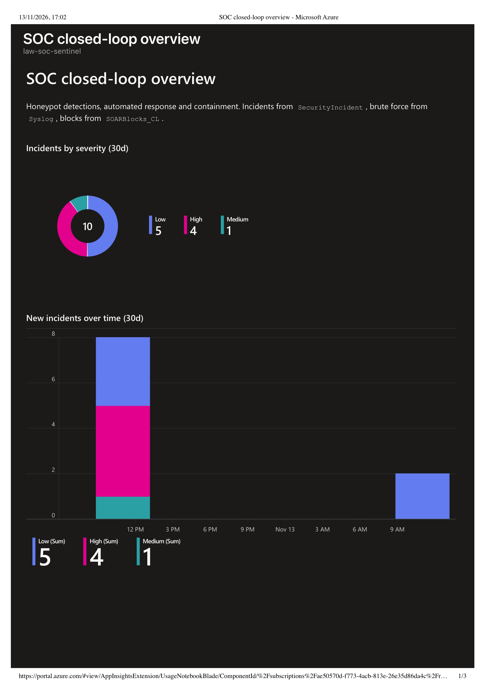

An SSH honeypot, deliberately exposed in an isolated network, feeds Microsoft Sentinel. Hand-written KQL detections mapped to MITRE ATT&CK raise incidents, and ten Logic Apps playbooks run every response step — enrich, notify, block, contain, close — so the loop from an attack to a contained, documented incident runs on its own, and every action leaves evidence. All of it is Terraform, deployed through the same reviewed pipeline as my guardrails project.
The lab is one closed loop. An Ubuntu honeypot with only port 22 open, and an identity that holds no roles, forwards its syslog to a Log Analytics workspace through the Azure Monitor Agent and a data collection rule. Four scheduled KQL rules watch that telemetry; when one fires, Sentinel raises an incident and an automation rule starts the playbooks that answer it.
The question behind the project: once a honeypot is compromised, how much of the response can run without a human — safely — and how do you prove each step actually happened? The answer here is a set of single-job Logic Apps playbooks: automatic ones do only safe, reversible steps (enrich, notify, block with a 24-hour expiry), and disruptive ones (end the session, lock the account) are manual, run by the analyst from the incident. Every run leaves a run history and an incident comment, so the triage report writes itself from evidence.
Validated end to end on real telemetry: a brute-force run from a network outside the management range raised the Low, Medium and High incidents below; the High incident auto-blocked the attacker at the NSG, logged the block with its expiry, enriched the source against AbuseIPDB, and posted to Slack — all before I touched it.

The SOC overview workbook, built in Terraform over the same tables the rules and playbooks already write — incidents by severity and over time, failed logins per hour, top source IPs, and active blocks. Counts are from the validation runs.
The early plan had six rules; two added noise without adding signal and were dropped. What remains is one rule per response priority, each tied to a MITRE technique.
| Rule | Severity / priority | MITRE ATT&CK | What it catches |
|---|---|---|---|
| R2 Compromise after brute force | High · P1 | T1078 Valid Accounts, T1021 Remote Services | An accepted SSH login from an IP that has a day of brute force behind it — a likely compromise |
| R4 Sudo probing | Medium · P2 | T1548 Abuse Elevation Control | A logged-in decoy account trying sudo it is not entitled to |
| R5 Sustained brute force | Low · P3 | T1110 Brute Force | A high volume of failed logins from one source with no success — reconnaissance pressure |
| R1 SSH brute force | Informational · P4 | T1110 Brute Force | Alert only, no incident; feeds the workbook's failed-login trend |
Count by ingestion time, not event time. Each rule runs every 10 minutes over its
"last 10 minutes." My first R5 test caught nothing: syslog reaches the workspace a minute or two after
the login happens, so a window filtered on TimeGenerated runs before the rows land
and then slides past them — a short attack is missed entirely. Filtering on ingestion_time()
instead (and widening R1's lookback to 20 minutes) means late rows are still inside the window. The
24-hour brute-force history still uses TimeGenerated, where a 90-second delay is irrelevant.
It is the kind of bug a rule only reveals under a real burst, not in a hand-run query.
One automation rule per detection starts that rule's automatic playbooks and changes nothing on the incident itself. Disruptive steps are manual, because running one is a human decision.
flowchart LR
HP["Honeypot
syslog via AMA"] --> LAW["Log Analytics
+ Sentinel"]
LAW --> R{"KQL rule
fires"}
R --> INC["Incident
raised"]
INC --> AR["Automation rule"]
AR --> PB1["PB1 Enrich
AbuseIPDB"]
AR --> PB45["PB2/3/4 Notify
Slack + SLA"]
AR --> PB5["PB5 Block IP
NSG + log, 24h TTL"]
PB5 --> PB6["PB6 Unblock
hourly, on expiry"]
INC -.analyst.-> PB7["PB7 Contain host
Run Command"]
INC -.analyst.-> PB89["PB8/PB9
Report + Close"]
PBX["PB10 Failure handler
hourly poll"] -.watches.-> AR
Solid arrows run automatically; dashed arrows are the analyst's decision. PB10 polls every playbook's run history and raises an alert and incident comment if any run failed.
| ID | Playbook | Kind | Job |
|---|---|---|---|
| PB1 | Enrichment | Automatic | Look up the attacker IP in AbuseIPDB and comment the reputation on the incident |
| PB2 / PB3 | Notify P2 / P3 | Automatic | Comment the acknowledge-by time and post Slack, linking the matching SLA doc |
| PB4 | Notify P1 | Automatic | Post the Slack message (PB5 is already blocking on the same incident) |
| PB5 | Block IP | Automatic | Add the IP to the NSG block rule and log it with a 24-hour expiry; skip private, trusted and already-blocked IPs |
| PB6 | Block expiry | Automatic (hourly) | Remove blocks past their expiry, log the unblock, comment on the incident |
| PB7 | Contain host | Manual | End the attacker's SSH session and lock the account through Azure Run Command |
| PB8 / PB9 | Report / Close | Manual | Draft the triage report from incident facts; set the classification and closing reason |
| PB10 | Failure handler | Automatic (hourly) | Detect any failed playbook run, alert Slack, and comment on the incident it came from |
Logic Apps has no "another workflow failed" trigger, so PB10 polls: every hour it lists the automation group's workflows with its managed identity, reads each one's runs that failed in the last hour, skips its own name so it never alerts on itself, and — for a failure that came from an incident — recovers the incident id from the failed run's short-lived trigger link to comment on the right case. A self-contained watchdog, at the cost of up to an hour's delay.
No person edits an incident, the NSG or the VM directly; they run a manual playbook. Each playbook's managed identity holds only the role its job needs, at the smallest scope, and every assignment is Terraform.
| Identity | Role | Scope |
|---|---|---|
| PB1 / PB2–4 / PB8–10 (comment, enrich, notify) | Microsoft Sentinel Responder (+ Key Vault Secrets User for secrets) | rg-soc-sentinel / the playbook Key Vault only |
| PB5 Block IP, PB6 Unblock | Network Contributor + Monitoring Metrics Publisher | The single SOAR-Block-Attackers rule and the block-log DCR only |
| PB7 Contain host | Virtual Machine Contributor | The honeypot VM only |
| Honeypot VM identity | — none — | No role assignments anywhere |
SOARBlocks_CL table through the Logs Ingestion API; PB6 finds expired rows with KQL and lifts them. But an NSG change does not drop an established SSH session, which is exactly why ending the session is a separate manual playbook (PB7, over Run Command), not something that happens silently.apply never wipes a real, in-force block.Everything is one Terraform root with one state, deployed by the same CI/CD design as my guardrails project: a read-only identity plans on every PR; a read-write identity applies only after I approve the environment. Running it against a Defender-portal Sentinel surfaced three things worth recording.
P1/P2/P3 label on the incident. The label never stuck: because the workspace is used in the Defender portal, the incident is a Defender case that XDR re-syncs and overwrites — a PUT returned success yet left the label empty. So the label step was dropped and priority is carried by the incident severity (High/Medium/Low), which sorts and filters natively, plus the Slack message and comment. The playbooks got simpler and nothing was lost.az role assignment list instead.Verified from KQL, not portal clicks. The Defender portal's incident and run-history pages
are slow to the point of hanging, so I checked lab state — incidents raised, blocks written, unblocks logged,
a forced playbook failure caught by PB10 — with queries over SecurityIncident,
Syslog and SOARBlocks_CL, the same tables the workbook reads. Fast, repeatable, and
the query is itself the evidence.
SOARBlocks_CL table lets PB6 find every expired block with one KQL query and feeds the workbook's active-blocks panel. The NSG rule is still what actually blocks; the table is the ledger.terraform plan already compares the code with what's deployed and orders the changes itself.Stated openly so the scope of the claims is clear.